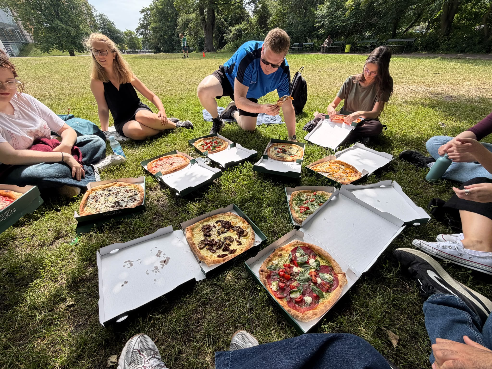

Ethics / how we work
The principles behind
our practice
The way we work matters as much as the questions we ask. We aim to make our research culture welcoming, sustainable, respectful and open.

2026 summer gathering of AlberdiLab members
Within the group
A welcoming
environment.
Good research begins with a culture in which people can contribute, learn and grow.
Our group manifesto makes our shared values explicit. We align expectations openly and revisit them as roles and projects develop, so that responsibilities, supervision and ways of working remain clear.
Regular workshops give us space to discuss career development, competence acquisition and work culture together. They help us build practical skills while continuing to shape the environment we want to work in.
How we use resources
Sustainable
practices.
AlberdiLab is LEAF Gold certified.
The certification reflects the measures we take to assess our environmental impact and continually optimise our research practices for greater sustainability.
We apply this thinking across the full research process—from fieldwork and laboratory protocols to data storage and computational analyses—so that environmental responsibility is part of how projects are designed and carried out.
Research with others
Respectful
research.
Research should respect the people, knowledge and biological resources that make it possible.
We follow FAIR principles so research outputs are findable, accessible, interoperable and reusable, and CARE principles so collective benefit, authority to control, responsibility and ethics guide our work with Indigenous data and knowledge.
We adhere to the Nagoya Protocol and seek the meaningful involvement of researchers from developing countries, especially where research materials, field sites or knowledge originate.
Knowledge in common
Open
science.
We share our work openly and as early as possible.
Results, data, software, code and ideas become more useful when others can examine, reuse and build on them. We therefore make our research outputs openly available as soon as we responsibly can.
Openness also shapes how we work before publication: we exchange methods and ideas, document what we build and invite collaboration throughout the research process.